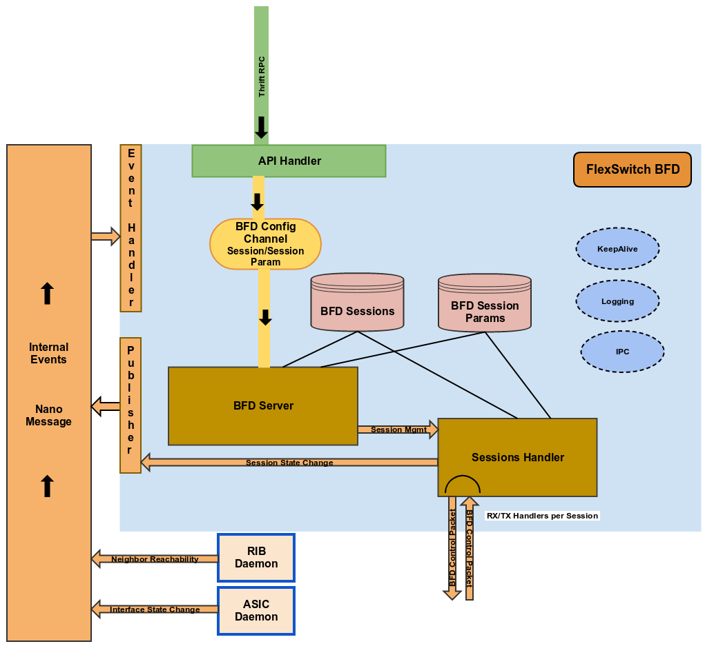

Bi-Directional Forwarding Detection(BFD)¶
BFD is a lightweight protocol that runs on UDP and notifies registered applications about the state of the connectivity to remote IP address. It acheives the same by send/receiving periodic control packets and timing out as per the configuration.
BFD in FlexSwitch is implemented to support RFC-5880 (BFD Asynchronous and Demand modes with Authentication) and RFC-7130 (Bfd over LAG links). BFD runs a seperate daemon, named bfdd.
Architecture¶
Design¶
BFD module in FlexSwitch has three major sub-modules, RPC handler, Server, and Session management. RPC handler listens to configurations sent to BFD and after doing initial validation the configuration is sent to Server sub-module for further processing. Server sub-module does initialization of BFD daemon and listens to configuration and notifications. Notifications come from ASICd and RIBd. BFD is only interested in LAG and PORT notifications from ASICd. These are required for BFD on LAG support. RIBd notifies any reachability change for the registered IP addresses for which BFD sessions are created. When a session is created or modified, Server sub-module forwards that request to Session management sub-module to process that. Session management sub-module is responsible for creation, deletion or update of BFD sessions and running TX and RX of control packets for each session. For every session two go routines are invoked for periodic TX and RX of packets. BFD state machine is run in Session management sub-module in context of each session seperately. Communications across go routines are achived by using channels.
Configurations¶
There are three configuration objects managed by BFD - BfdGlobal, BfdSession, and BfdSessionParam.
Global Config for BFD
Vrf string `SNAPROUTE: "KEY", ACCESS:"w", MULTIPLICITY:"1", AUTOCREATE: "true", DEFAULT: "default", DESCRIPTION: "VRF id where BFD is globally enabled or disabled"`
Enable bool `DESCRIPTION: "Global BFD state in this VRF", DEFAULT: "true"`
Session config
IpAddr string `SNAPROUTE: "KEY", ACCESS:"w", MULTIPLICITY:"*", DESCRIPTION: "BFD neighbor IP address"`
ParamName string `DESCRIPTION: "Name of the session parameters object to be applied on this session", DEFAULT: "default"`
Interface string `DESCRIPTION: "Name of the interface this session has to be established on", DEFAULT: "None"`
PerLink bool `DESCRIPTION: "Run BFD sessions on individual link of a LAG if the neighbor is reachable through LAG", DEFAULT: "false"`
Owner string `DESCRIPTION: "Module requesting BFD session configuration", DEFAULT: "user"`}
Session parameters config
Name string `SNAPROUTE: "KEY", ACCESS:"w", MULTIPLICITY:"*", DESCRIPTION: "Session parameters"`
LocalMultiplier uint32 `DESCRIPTION: "Detection multiplier", DEFAULT: "3"`
DesiredMinTxInterval uint32 `DESCRIPTION: "Desired minimum tx interval in ms", DEFAULT: "1000"`
RequiredMinRxInterval uint32 `DESCRIPTION: "Required minimum rx interval in ms", DEFAULT: "1000"`
RequiredMinEchoRxInterval uint32 `DESCRIPTION: "Required minimum echo rx interval in ms", DEFAULT: "0"`
DemandEnabled bool `DESCRIPTION: "Enable or disable demand mode", DEFAULT: "false"`
AuthenticationEnabled bool `DESCRIPTION: "Enable or disable authentication", DEFAULT: "false"`
AuthType string `DESCRIPTION: "Authentication type", SELECTION: "metmd5/keyedmd5/metsha1/keyedsha1/simple", DEFAULT: "simple"`
AuthKeyId uint32 `DESCRIPTION: "Authentication key id", DEFAULT: "1"`
AuthData string `DESCRIPTION: "Authentication password", DEFAULT: "snaproute"`
By default, BFD is enabled globally. Also, a default session param object is created with name “default” so that if any session configuration is received without a param object name, the default param will be applied.
“default” session param object has below setting.
Name = "defalut"
LocalMultiplier = 3
DesiredMinTxInterval = 250 ms
RequiredMinRxInterval = 250 ms
RequiredMinEchoRxInterval = 0
DemandEnabled = false
AuthenticationEnabled = false
When a BFD session is started, it’s RX and TX intervals are set to higher value (2 seconds) until the session goes to UP state on both local and remote. After it goes to UP state, the packets are sent with configured TX interval. Also, RX interval set to what is received from remote side.
A session ID is generated everytime a new session is created. Maximum number of sessions that can be configured in BFD is set to 1024. Hence, session ID value can range from 1 to 1024. Session ID is used as discriminator in the control packet.
Control Packets RX/TX¶
When sessions management sub-module starts, it invokes a go routine to listen on BFD port (UDP:3784) to receive any control packet sent to FlexSwitch. From the received control packet session ID is extracted from RemoteDiscriminator field. Then find the session object matching the session ID. If none found then look up for session object from the source IP address. If then also there is no session object found then discard the packet. If a session object found then forward the received packet to RX go routine for that session. Session TX go routine runs a periodic timer (TxInterval) and sends out a pcaket upon timer expiry. By default, TxInterval is 250 ms. To optimize packet TX, a control packet for each session is prepared and cached. upon timer expiry the cached packet is replayed. If there is any config or state changes for that session, a new packet is prepared and cached. A 25% jitter is applied on TxInterval to normalize CPU utilization. If the DetectionMultiplier is equal to 1 then the jitter is deducted from TxInterval otherwise added.
BFD Applications¶
BFD applications such as BGP can create or delete a session using the below RPC methods. In this example, we are not providing interface name to strictly tie the session on to. Applications like OSPF may want to provide interface name as well while creating a session.
func (mgr *FSBfdMgr) CreateBfdSession(ipAddr string, sessionParam string) (bool, error) {
bfdSession := bfdd.NewBfdSession()
bfdSession.IpAddr = ipAddr
bfdSession.ParamName = sessionParam
bfdSession.Owner = "bgp"
mgr.logger.Info(fmt.Sprintln("Creating BFD Session: ", bfdSession))
ret, err := mgr.bfddClient.CreateBfdSession(bfdSession)
return ret, err
}
func (mgr *FSBfdMgr) DeleteBfdSession(ipAddr string) (bool, error) {
bfdSession := bfdd.NewBfdSession()
bfdSession.IpAddr = ipAddr
bfdSession.Owner = "bgp"
mgr.logger.Info(fmt.Sprintln("Deleting BFD Session: ", bfdSession))
ret, err := mgr.bfddClient.DeleteBfdSession(bfdSession)
return ret, err
}
If an interface is provided while creating the session, if rechability to that remote IP address is through som other interface then the session will not be started.
When session state changes a notification is published to
PUB_SOCKET_ADDR = "ipc:///tmp/bfdd.ipc"
Any application interested in listening to BFD session state changes should subscribe to this socket.
BFD notification contains
DestIP string
State bool
if State == true then the session is declared as up otherwise down.
Debugging¶
Below BFD states can be queried
BFD Global State
Vrf string `SNAPROUTE: "KEY", ACCESS:"r", MULTIPLICITY:"1", DESCRIPTION: "VRF id for which global BFD state is requested"`
Enable bool `DESCRIPTION: "Global BFD state in this VRF"`
NumTotalSessions uint32 `DESCRIPTION: "Total number of BFD sessions"`
NumUpSessions uint32 `DESCRIPTION: "Number of BFD sessions in up state"`
NumDownSessions uint32 `DESCRIPTION: "Number of BFD sessions in down state"`
NumAdminDownSessions uint32 `DESCRIPTION: "Number of BFD sessions in admin down state"`
BFD Session State
IpAddr string `SNAPROUTE: "KEY", ACCESS:"r", MULTIPLICITY:"*",DESCRIPT ION: "Neighbor IP address"`
SessionId int32 `DESCRIPTION: "Session index"`
ParamName string `DESCRIPTION: "Session parameters config"`
IfIndex int32 `DESCRIPTION: "Interface index"`
InterfaceSpecific bool `DESCRIPTION: "This session is tied to an interface"`
IfName string `DESCRIPTION: "Interface to which this session is establi shed on"`
PerLinkSession bool `DESCRIPTION: "This is a perlink session on LAG"`
LocalMacAddr string `DESCRIPTION: "My MAC address"`
RemoteMacAddr string `DESCRIPTION: "Neighbor MAC address"`
RegisteredProtocols string `DESCRIPTION: "Registered owners"`
SessionState string `DESCRIPTION: "My state"`
RemoteSessionState string `DESCRIPTION: "Neighbor state"`
LocalDiscriminator uint32 `DESCRIPTION: "My discriminator"`
RemoteDiscriminator uint32 `DESCRIPTION: "Neighbor discriminator"`
LocalDiagType string `DESCRIPTION: "My diagnostic"`
DesiredMinTxInterval string `DESCRIPTION: "My desired minimum tx interval"`
RequiredMinRxInterval string `DESCRIPTION: "My required minimum rx interval"`
RemoteMinRxInterval string `DESCRIPTION: "Neighbor minimum rx interval"`
DetectionMultiplier uint32 `DESCRIPTION: "My detection multiplier"`
RemoteDetectionMultiplier uint32 `DESCRIPTION: "Neighbor detection multiplier"`
DemandMode bool `DESCRIPTION: "My demand mode"`
RemoteDemandMode bool `DESCRIPTION: "Neighbor demand mode"`
AuthSeqKnown bool `DESCRIPTION: "Authentication sequence known"`
AuthType string `DESCRIPTION: "My Authentication type"`
ReceivedAuthSeq uint32 `DESCRIPTION: "Received authentication sequence number"`
SentAuthSeq uint32 `DESCRIPTION: "Sent authentication sequence number"`
NumTxPackets uint32 `DESCRIPTION: "Number of control packets sent"`
NumRxPackets uint32 `DESCRIPTION: "Number of control packets received"`
BFD Session Params
Name string `SNAPROUTE: "KEY", ACCESS:"r", MULTIPLICITY:"*", DESCRIP TION: "Session parameters"`
NumSessions int32 `DESCRIPTION: "Number of sessions using these params"`
LocalMultiplier int32 `DESCRIPTION: "Detection multiplier"`
DesiredMinTxInterval string `DESCRIPTION: "Desired minimum tx interval"`
RequiredMinRxInterval string `DESCRIPTION: "Required minimum rx interval"`
RequiredMinEchoRxInterval string `DESCRIPTION: "Required minimum echo rx interval"`
DemandEnabled bool `DESCRIPTION: "Demand mode enabled"`
AuthenticationEnabled bool `DESCRIPTION: "Authentication enabled"`
AuthenticationType string `DESCRIPTION: "Authentication type"`
AuthenticationKeyId int32 `DESCRIPTION: "Authentication key id"`
AuthenticationData string `DESCRIPTION: "Authentication password"`
Work In Progress¶
- BFD authentication is not tested for inter-operability with any other implementation.
- BFD over LAG links is not tested for inter-operability with any other implementation.
- Echo functionality is yet to be supported in FlexSwitch.
- Active mode not yet implemented.